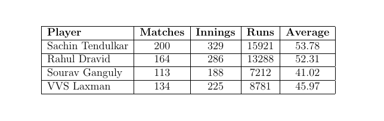
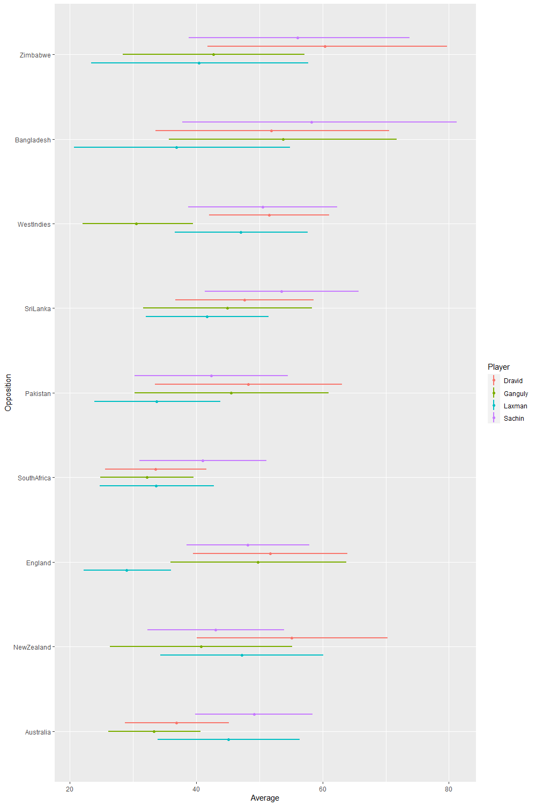

Sachin Tendulkar, Rahul Dravid, Sourav Ganguly and VVS Laxman are usually dubbed the faboulous four of Indian cricket team. In the late 1990’s and early 2000’s, these players were at their peak and were the backbone of Indian Test Cricket team from the batting perspective.
We will have a look at the career batting average of each of the player against the nine test playing nations and try to understand which of the player has been a consistent performer across teams. Sachin Tendulkar made his test cricket debut in 1989 whereas Rahul Dravid, Sourav Ganguly and VVS Laxman made their debuts in the year 1996. Sourav Ganguly was the first to retire in 2008 followed by Rahul Dravid, VVS Laxman both of whom retired in the year 2012 and lastly Sachin Tendulkar retired in the year 2013.
The career summary of the four players under consideration can be seen in table below

Since all the players have played more that 100 matches (and more that 150 innings), we can compare the batting averages for them against all the nine test playing nations. However, we will get a little adventurous and use a Bayesian approach to calculate the credible intervals for the batting average for each of the player.
In case you are wondering what a Bayesian method means, it is simply reconciling our belief (prior) with the data (likelihood) to obtain updated belief (posterior). And the credible interval gives us the plausible values for the batting average based on the data we have. Along with the average against each opponent, we are incorporating the variation in the scoring as well which is nothing but considering how consistently or inconsistently the runs were scored.
We will incorporate another layer of uncertainty in the sense that we let the parameter at the first level have their own uncertainty and assign a distribution of their own. This is done through a Bayesian hierarchical model
The Bayesian Hierarchical model we will use for each player is as follows
\[Y_{i} \overset{\mathrm{i.i.d}}\sim N(\mu_{opposition[i]}, \sigma_{opposition[i]}^2)\]
\[\mu_{opposition} \overset{ind}{\sim} N(\theta,\tau^2)\]
\[\theta \sim N(\theta_{0}, \tau_{0}^2)\]
\[\tau \sim Ca^{+}(0,1)\]
\[\sigma_{opposition} \sim Uniform(10,200)\]
where \(\theta_{0} = 50\) and \(\tau_{0} = 10\) has been used which is consistent with each of the player’s career average.
The model was run using a JAGS (Just Another Gibbs Sampler) which samples from the posterior distribution of the parameters. We will not go into much details about the individual parameters but use the parameters to come up with the credible intervals for the average runs scored per innings for all the players against each of the test playing nation. We than combine the credible intervals for all the players into a single plot which can be found below.

We have the credible intervals for each of the four players against the nine test playing nations. Opposition is indicated on the x axis and the horizontal lines corresponding to any of the opposition is the credible interval for average against that particular opposition. We use different colors to indicate which player the interval corresponds to. Purple colour corresponds to intervals for Sachin Tendulkar, red colour corresponds to intervals for Rahul Dravid, green colour corresponds to intervals for Sourav Ganguly and blue colour corresponds to intervals for VVS Laxman.
Since all the players have played against each of the opposition, we have intervals for all the players against all the opposition. However, all the players have batted less than 10 innings against Bangladesh and Zimbabwe and hence the intervals are not much meaningful.
There are two characteristics which can be understood looking at any of the interval. The first is the width of interval which indicates how consistent the player was against that particular opposition. If the width of the interval is big, that indicates the player scored runs inconsistently against the particular opposition. So we ideally want the interval to be as narrow as possible.
The second characteristic is the location of the interval which indicates the average of the player againt a particular opposition. If the average is higher, the location of the inteval will be towards the right and if the average is on the lower side the interval will lie towards the left side. Ideally we want a interval to be towards the right side.
Now that we have understood how to read the intervals, let us start comparing the intervals for players against each of the opposition. In professional sports, every player seems to have a ‘favored’ opposition against whom the player plays extraordinarily well which will be indicated in the plot by a narrow interval towards the right side. Similarly every player has an opposition who they do not enjoy playing which will be indicated in the plot by a wide interval and/or interval towards the left side.
Against SENA countries
For teams in the Indian subcontinent, test cricket against SENA countries (South Africa, England, New Zealand and Australia) are considered an good indicator of how good a player is.
Australia was the most dominant opposition during the playing career of the four players. Australia tour of India in 2001 was a legendary series which was the turning point of Indian test cricket. The second test match in the series at Kolkata which India won while following on (an overwhelmingly difficult task) was nothing short of a legendary match. It is well know that Australia is VVS Laxman’s favoured opposition. However, if we look at the interval’s corresponding to Australia, we can see that Sachin Tendulkar has a better average than the other three players against Australia followed by VVS Laxman, Rahul Dravid and lastly Sourav Ganguly.
Against New Zealand, Rahul Dravid seems to have the higher average followed by VVS Laxman, Sachin Tendulkar and lastly Sourav Ganguly.
Against England, Rahul Dravid seems to have the higher average followed by Sourav Ganguly, Sachin Tendulkar and lastly VVS Laxman. VVS Laxman seems to have unusually low interval for average against England.
All the players seem to have performed below par against South Africa. Among the four players, Sachin Tendulkar seems to have performed relatively better than then the other three players who seems to have a similar record against South Africa.
Against other countries
Against Pakistan, Rahul Dravid has the highest average followed by Sourav Ganguly, Sachin Tendulkar and lastly VVS Laxman.
Against Sri Lanka, Sachin Tendulkar has the highest average followed by Rahul Dravid, Sourav Ganguly and lastly VVS Laxman.
Against West Indies, Rahul Dravid has the highest average followed by Sachin Tendulkar, VVS Laxman and lastly Sourav Ganguly. Sourav Ganguly has an unusually low interval for average against West Indies.
All the players have played less than 10 innings against Zimbabwe and Bangladesh and hence the scores have more variation in them which can be seen by the wide intervals. So comparing the intervals for the players against these two teams is not meaningful.